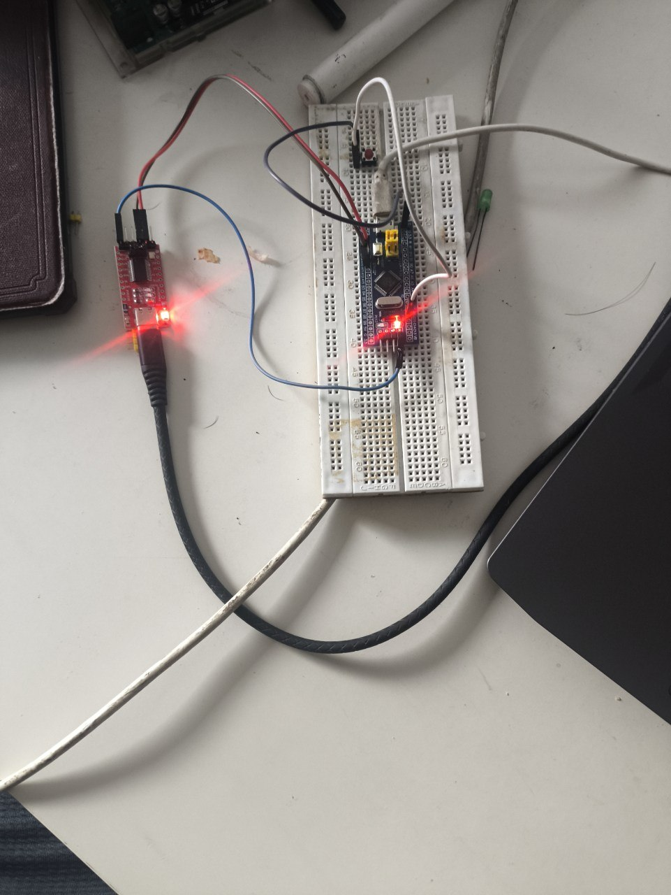
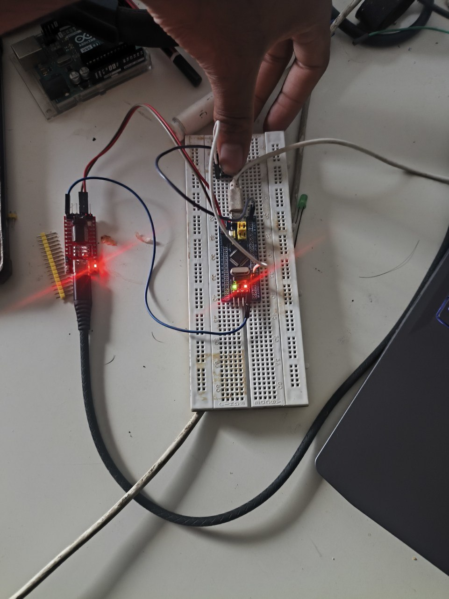

Reading a Button on the Blue Pill: My First Digital Input
The first two builds only ever talked at me — an LED that's always on, a serial line that never listens. This time the chip finally reacts to something I do in real time, through a tactile button and an internal pull-up.
Parts
- "STM32F103C8T6 Blue Pill"
- "HW-417C USB-to-UART adapter"
- "Micro-USB cable"
- "Breadboard + jumper wires"
- "4-pin tactile push button"
My first two Blue Pill builds only ever talked at me. The LED just sat there on or off, and the UART line printed the same string into the void once a second whether anyone was reading it or not. Both proved the toolchain and the wiring worked end to end, but neither one ever noticed I existed. This build was the first time that changed: read a button press, and let it decide whether the onboard LED is on or off, instead of the program deciding on its own.
The hardware
Same core setup as the last two posts, plus one new part:
pull-up instead of wiring an external one, one less thing to get wrong on the breadboard.
- STM32F103C8T6 Blue Pill
- HW-417C USB-to-UART adapter, wired GND/TXD/RXD only, same as before
- One 4-pin tactile push button
- No resistor this time — the plan was to lean on the chip's own internal
The problem
Two small surprises before I even got to code. The first was PA0 itself — like A9 and A10 before it, it's one of the Blue Pill's bare, unpopulated GPIO holes, no pin sticking up for a jumper wire to grip. Same fix as last time: snap a single pin off a spare header strip and friction-fit it in by hand.
The second surprise was the button. I was picturing a simple two-legged switch and pulled a four-legged one out of the bag instead. Turns out that's completely ordinary — the two legs on each side of the body are already tied together internally, purely so the button sits flat without wobbling. Electrically it's still just an on/off switch between two nodes. The part that actually mattered was straddling the breadboard's center gap with it, so each side's pair of legs landed in electrically separate columns instead of shorting itself the moment it touched down.
Reading the button
One leg goes to PA0, the other to GND off the Blue Pill's bottom power header — one of the only rows on the board with an actual protruding pin. That's the whole circuit. No external resistor, because INPUT_PULLUP in the code does that job internally: PA0 idles HIGH until the button physically drags it down to GND.
#include <Arduino.h>
#define BUTTON_PIN PA0
void setup() {
pinMode(PC13, OUTPUT);
digitalWrite(PC13, HIGH); // start off (PC13 LED is active-low)
pinMode(BUTTON_PIN, INPUT_PULLUP);
}
void loop() {
bool pressed = (digitalRead(BUTTON_PIN) == LOW);
digitalWrite(PC13, pressed ? LOW : HIGH); // LOW = LED on
}loop() just polls PA0 and mirrors it onto PC13, and both pins happen to be inverted from what you'd guess at first — the pulled-up button reads LOW when pressed, and PC13's LED turns on when driven LOW. Two inversions cancel out, so the mental model ends up matching reality anyway: press the button, the LED lights.
Same BOOT0 dance as the last two posts to flash it — BOOT0 to 1, RESET, platformio run -t upload, BOOT0 back to 0. Built clean on the first try, 5.5% RAM and 16.9% flash, and it worked the moment I flipped BOOT0 back.
Released, the LED's off:

Held down, it lights up:

It's a small result — one bit of the world finally reaching back into the chip instead of the chip only ever reaching out — but it's the one every later project depends on. A floating input pin with nothing pulling it either way doesn't read a clean 0V or 3.3V, it reads whatever noise happens to be nearest, which is exactly why the internal pull-up wasn't a convenience here, it was what turned an ambiguous pin into a dependable one. The buzzer, the potentiometer, the interrupt-driven rebuild of this exact circuit — all of it assumes the chip can trust what a pin is telling it, and this was the first project where I actually had to earn that trust instead of assuming it.
Notes from readers
Comments — via GitHub